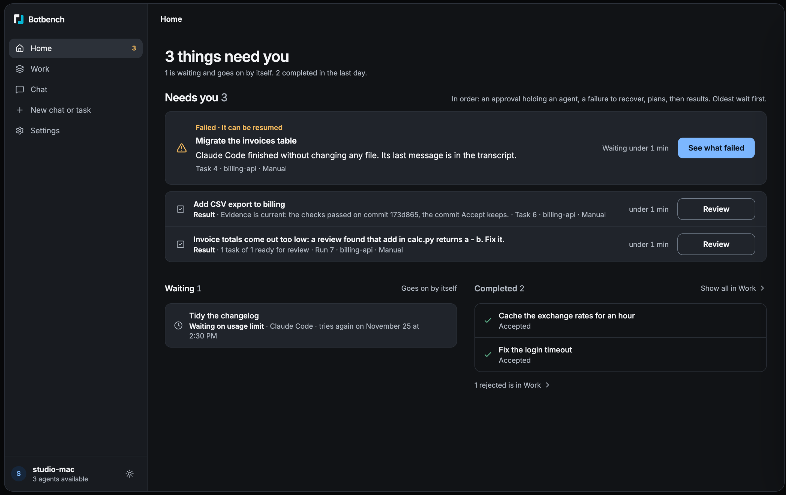
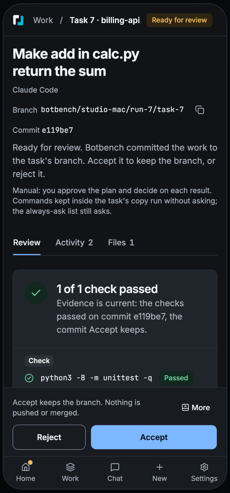
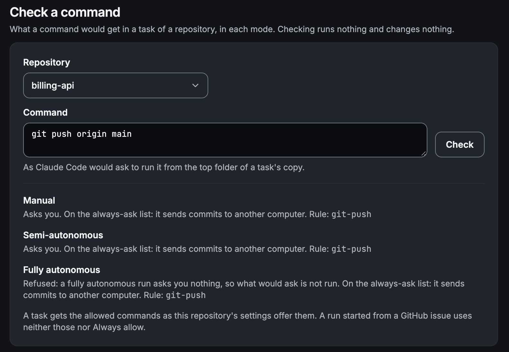
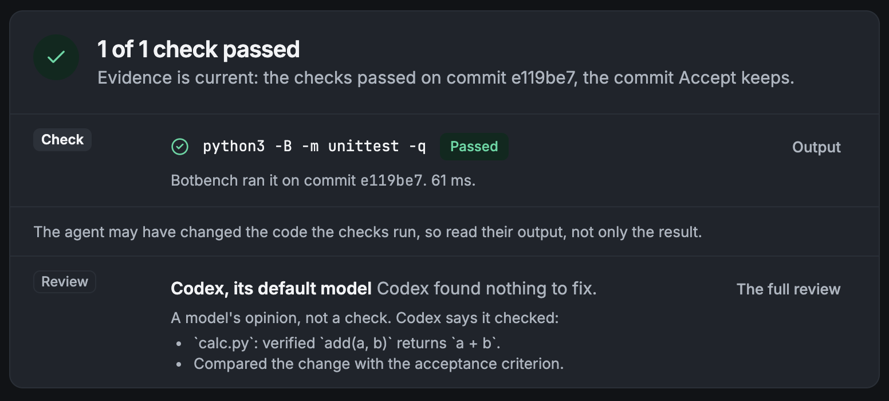
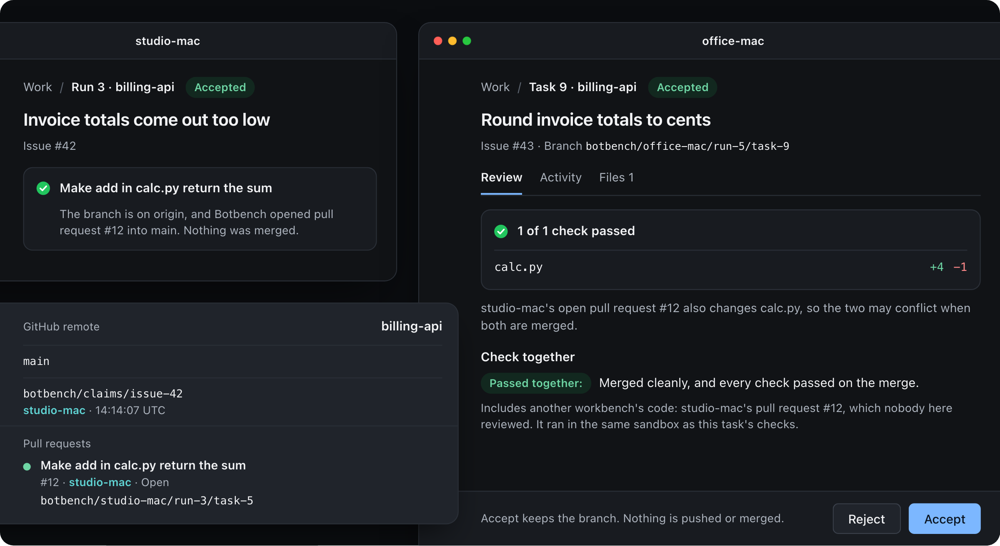

Put your coding agents to work. Together.
One workbench for your agents. One coordination layer for your team.
For developers on a Mac who use Claude Code. Hand it a task, walk away, and come back to a branch with its checks and a second agent’s review.
Share a GitHub repository with a teammate who uses their own agents? When you both push there, Botbench can tell you before your work collides, not when the second pull request opens.
About ten minutes to your first branch, in a practice repository. Early, macOS only, open source.



Walk away.
Come back to the branch.
Botbench does not touch your files or your branch. Each task gets its own copy, and you decide what comes back.
A task. Its own branch.
Hand over a task, or let Claude Code plan a run of several. Each task works in its own copy of your repository, on a branch such as botbench/your-mac/run-1/task-1, under the mode you choose: manual, semi-autonomous or fully autonomous.


git push origin main would get in each mode, before any agent runs it.Answer only what reaches outside.
Reading, editing and commands inside the task’s copy go on without you. A push, sudo or a file outside the copy waits as a card you answer on the Mac, or on your phone over a private network that gives the Mac an HTTPS name.
What asks, and what never doesCome back to work you can inspect.
Read the branch, the diff and the output of your repository’s checks. Another vendor’s agent can review the change; Botbench shows its review as a model’s opinion, apart from the checks. Then accept or reject. Botbench never merges a pull request.
What a check can and cannot tell you

Real screens from a Botbench installation named studio-mac, working on a small billing repository. The agents’ work is replayed from recorded Claude Code and Codex sessions; the repository’s check really ran. Nothing on them was edited. Where each one came from
Find out before the second pull request.
Two developers, each with their own agents, usually learn they took the same issue, or changed the same file, when the second pull request opens. With Botbench on both Macs, each workbench reads the other’s work from the repository you both push to, and tells you first.

You found out before either was merged. Both branches are still there to decide on.
Available today: the overlap warning, issue claims, and checking two changes together. Early Paired questions and answers, tested with two installations on one Mac, not yet across two.
How coordination works todayFrom task to decision, in 25 seconds.
A plan is approved, Claude Code fixes a bug, the repository’s check and Codex’s review come back, and the task is accepted.
Make your first branch in about ten minutes.
Build Botbench from source, hand Claude Code one task in a practice repository, and read the branch it leaves. Early software: no installer, no hosted service, and nothing promised to stay the same.
What it needs
- Mac
- macOS. Agents start only on macOS, because the confinement relies on its sandbox.
- Node
- Node 24 or later, and git set up so you can commit.
- Claude Code
- Required, signed in with your own subscription. It plans every run and builds by default.
- Codex
- Optional, to build or to review.